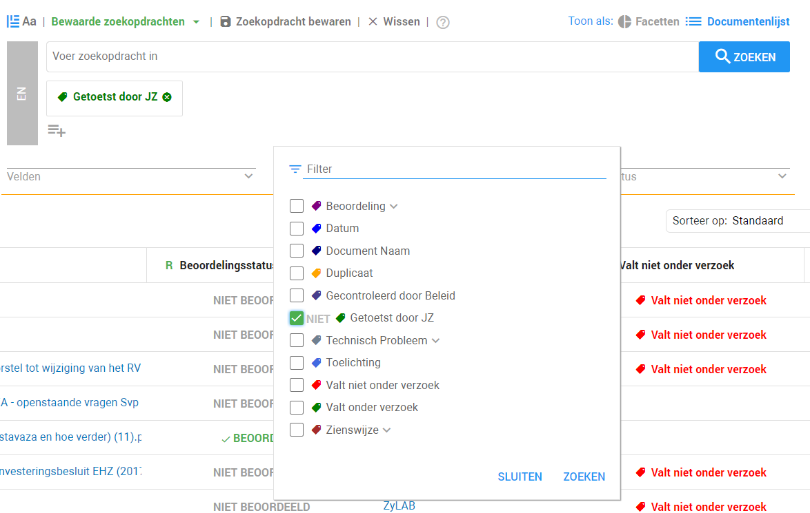
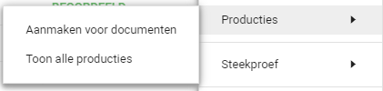

Wanneer alle documenten behandeld zijn, kunnen ze worden klaargemaakt voor de oplevering aan de verzoeker. Het proces binnen ZyLAB om de document permanent af te lakken heet 'produceren'. Tijdens dit proces maakt u een 'productie' waarna de documenten gedownload kunnen worden.
Om een productie te maken moet u de documenten selecteren waarvan u een productie wilt maken. Afhankelijk van hoe u de voortgang heeft bijgehouden selecteert u bij de zoekbalk het label waarmee de beoordelaars hebben aangegeven dat de documenten klaar zijn voor oplevering. In het geval u enkel één controle heeft uitgevoerd zal dit waarschijnlijk het label Gecontroleerd door Beleid zijn, indien u twee controles per document heeft laten uitvoeren zal dit waarschijnlijk het label Gecontroleerd door JZ zijn. Vervolgens klikt u op Zoeken.
Aangezien het proces afhankelijk is van uw werkwijze binnen ZyLAB, zijn we er bij dit voorbeeld van uitgegaan dat u het standaard proces, zoals beschreven in deze use case, heeft gevolgd.

Vervolgens moet u in de documentenlijst zijn om een productie te maken. Mocht u nog niet in de documentenlijst zitten, dan klikt u boven de zoekbalk op Documentenlijst.
Vervolgens klikt u op het tandwiel icoon aan de rechterzijde
Daarna gaat u naar Producties en klikt u op Aanmaken voor documenten.

U bevindt zich nu in de productie wizard. Ga verder met een van de volgende topics:
Documenten produceren met permanente aflakking en inventarislijst
Documenten produceren met leesbare aflakkingen
Documenten produceren zonder aflakkingen